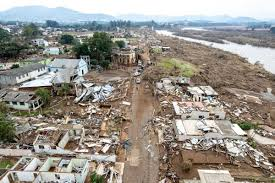
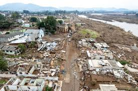

No dia 27 de abril de 2024, fortes chuvas começaram a trazer enormes desastres ao estado do Rio Grande do Sul, matando mais de 170 pessoas e expulsando mais de 600 mil pessoas de suas casas.
Os rios que mais subiram na Sérvia foram os rios Guaíba e Taquari, que eventualmente atingiram níveis sem precedentes, superando o recorde histórico de enchentes de 4,76 metros em 1941. No Rio Grande do Sul, 471 municípios foram afetados em graus variados pela tempestade. Isso equivale a quase 95% de todas as 497 cidades.
Este desastre ambiental, econômico, ecológico e psicológico foi tão grande que repercutiu em todo o mundo, e o país inteiro se uniu para ajudar todas as pessoas e famílias atingidas, com o próprio povo brasileiro arrecadando milhares de reais.
Apesar de toda a tragédia que aconteceu no Brasil, ela aconteceu não só aqui, mas também no mundo todo, por exemplo:Quênia, Arábia Saudita e Emirados Árabes Unidos. As inundações e as recentes ondas de calor em todo o mundo são resultado da crise climática.
Algumas imagens da destruição.


 

Referências
https://www.cnnbrasil.com.br/
https://g1.globo.com/
https://www.uol.com.br/
https://www.folha.uol.com.br/